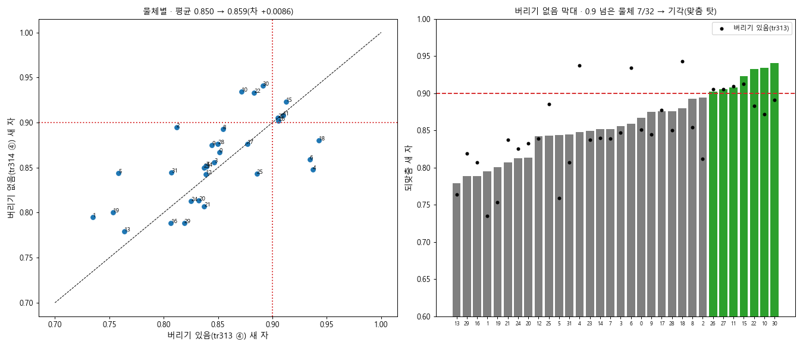

실험 m2_tr0314_h067_버리기탓
목표 G1.2 view 모음 → 파츠별 CAD code(CadQuery · 그 전 「3 면도 → 파츠별 CAD」 · 지금 M2 는 위 · 앞 · 옆 고정 세 장만 받음 → 아무 각도 N 장으로 바꿀 것 · 11-20) · G1 첫 제품 — 피규어 · 메카 사진 여러 장 + 치수 → 숨은선 3 면도 + 파츠별 CAD · G0 임의의 이미지 → CAD 코드 · 빌린 가정 5: 정사영 · 시점앎 · 흰바탕 · 렌더화풍 · 정답3D · 갚는 계획: 진단 · 정답 만들기 — 껍데기를 그릴 어휘가 정해지면 그 어휘로 CAD code 정답 변환(m2 학습 · 비교는 그 뒤 카드) · 목표 시험지 값: 안 잼 (!)
tr313 관문 ④(S6 합성 정답 32 되맞춤 0.8502 < 0.9)가 일찍 버리기(B2) 때문에 낮았나 — 버리기만 빼고 같은 ④ 를 돌리면 0.9 를 넘나?
| 가설 | 주장 | 결과 | 근거 |
|---|---|---|---|
| m2-H67 | 일찍 버리기가 ④ 를 문턱 아래로 깎았다 — 버리기만 빼면 ④ 가 0.9 를 넘는다 | 기각 | S6 합성 정답 32 버리기 없는 ④ 되맞춤 새 자 평균 0.8588 · 최소 0.7792(< 0.9 → 기각) · 0.9 넘은 물체 7/32(tr313 과 같은 수) · tr313 ④ 0.8502 대비 넷차 +0.0086 · 뺌 자리 28/93(tr313 26/93) · 남은 뺌 몸 평균 2.41 · 하네스 실패 0 · CAD 안 끝남 0 · 조용한 실패 0 · 판 폴더 0.52 GB · 물체별 차 오름 20 · 내림 12 · 물체 10 · 22 · 30 은 +0.063 · +0.05 · +0.05(+0.05 ~ +0.06) · 4 · 6 · 18 은 −0.09 · −0.075 · −0.062(−0.06 ~ −0.09) · 가장 큰 오름 물체 5 +0.085 · 2 +0.083 · 0.9 넘은 7/32 는 새로 넘은 셋(10 · 22 · 30) · 떨어진 셋(4 · 6 · 18) 맞바꿈 · 문턱까지 0.04 — 넷.json 두 판 물체별에서 셈 |
결정 표(돌리기 전에 정함)
- 만약 지지
다음 버리기 탓 — S6 판은 버리기 없이(사용자에게 속도와 맞바꿈 알림) · tr313 본 판을 그 코드로 - 만약 기각
다음 맞춤 탓 — 버리기와 상관없이 뺌 몸 찾기(맞춤) 고침 카드로
분석
한 줄로
물음: tr313 의 관문 ④(뺌 합성 정답 되찾기 0.8502)가 낮았던 것은 일찍 버리기 때문인가?
답: 아니다. 일찍 버리기만 끄고 같은 ④ 를 다시 돌려도 평균은 0.8588 로 문턱 0.9 아래다. 0.9 를 넘은 물체도 7/32 로 그대로다. m2-H67 기각 — 0.9 미달은 일찍 버리기로 설명되지 않는다.
왜 이 실험을 했나
tr313 은 몸마다 「뺌」을 넣은 어휘가 자기 어휘로 만든 정답을 0.9 까지 못 되찾아서, 본 판을 돌리지 못했다. 그 판은 사용자 결정으로 들인 일찍 버리기(출발 16 개 중 loss 낮은 것만 남김) 코드로 돌았다. 일찍 버리기는 실제 물체에서 끝 승자 출발을 17/32 에서 버렸다. 그러니 뺌 몸을 늦게 찾는 출발도 먼저 버렸을 수 있다고 짐작했다. 목표는 임의의 메시를 CAD code 정답으로 바꾸는 변환이다.
바꾼 것 하나
일찍 버리기를 껐다. 출발 16 개가 모두 끝까지 맞춘다. 나머지(뺌 어휘 · 씨앗 · jit · 유효 아님 지킴이 · R7 나란히 · 합성 정답 32)는 tr313 의 ④ 와 같다.
결과

왼쪽에서 점 20 개가 대각선 위에 있지만 대부분 0.9 선(빨간 점선) 아래에 머무는 것을 보자. 오른쪽 막대는 버리기 없음, 검은 점은 버리기 있음이다.
| 버리기 없음(이 실험) | 버리기 있음(tr313) | 문턱 | 넘었나 | |
|---|---|---|---|---|
| 되맞춤 새 자 평균 | 0.8588 | 0.8502 | 0.9 | 아니오 |
| 0.9 넘은 물체 | 7/32 | 7/32 | — | — |
| 뺌 자리 찾음 | 28/93 | 26/93 | — | — |
| 하네스 실패 | 0 | 0 | 0 | 예 |
새 자는 정답 메시와 맞춘 메시의 표면이 0.02 안에서 겹치는 정도(0 ~ 1)다.
왜 이렇게 나왔나
확인한 것
- 평균 차는 +0.0086 이고, 0.9 문턱까지는 여전히 0.04 남는다.
- 물체별로는 20 개가 오르고 12 개가 내렸다. 가장 크게 오른 것은 물체 5(+0.085)와 2(+0.083)다. 「7/32 그대로」의 속은 맞바꿈이다: 물체 10 · 22 · 30 이 0.9 를 새로 넘고(+0.05 ~ +0.06), 4 · 6 · 18 이 0.9 아래로 떨어졌다(−0.06 ~ −0.09).
- 뺌 몸 93 개 중 제자리를 찾은 수도 26 → 28 로 거의 같다.
짐작 (아직 확인 안 함)
- 평균 차 +0.0086 은 같은 코드 판 사이 흔들림과 비슷한 크기로 보인다. 잡음 판(jit · 씨만 바꿈)에서 물체별 표준편차 ≈ 0.04 였고, 32 평균이면 ≈ 0.007 로 셈했다(잰 값이 아니라 √32 로 나눈 셈).
- 막힌 곳은 맞춤 쪽이라고 본다. 다만 이 판은 버리기를 지웠을 뿐, 맞춤이 막혔다는 것을 직접 재지는 않았다.
- 맞춤이 뺌 몸을 파인 곳에 옮겨 놓지 못한다. 씨앗 넷으로 출발하지만, 부드러운 단계에서 뺌 몸이 더하는 몸에 밀리거나 꺼지는 것 같다.
한계
- 「바꾼 것」에는 섞임이 하나 있다: 버리기를 끄면 끝 단계에서 고르는 출발 후보도 2 개 → 16 개로 는다.
- 한 번씩만 돌렸다. 차 +0.0086 은 잡음 크기라 「버리기가 조금 깎았다」도 「안 깎았다」도 이 판으로는 못 가른다. 다만 0.9 문턱과의 거리(0.04)는 버리기로 설명되지 않는다.
- 합성 정답 32 개뿐이다.
배운 것과 다음
0.9 미달은 일찍 버리기로 설명되지 않는다. 다음 의심은 뺌 몸을 찾는 맞춤이다.
- 다음은 맞춤 쪽: 뺌 몸이 맞춤 중에 어디로 가는지(걸음마다 자리 · 켜짐)를 물체 몇 개에서 본다.
- ④ 를 0.9 넘게 만든 뒤에 tr313 본 판(실제 32)으로 껍데기 가설을 잰다.
- 바탕은 B2 코드 그대로 둔다.
검토 (11-26 맥락 없는 서브 에이전트 · 카드 · 잼 · 넷 · 보고 · 결과_pc.png · tr313 넷.json 만 봄)
- 숫자 · 판정: 넷.json 두 개 · 카드와 모두 맞음 · 판정식대로 기각.
- 「확인한 것」 안에 잡음 ≈ 0.007(셈 · 잰 값 아님)이 있었음 → 짐작으로 옮김.
- 든 물체 여섯은 0.9 선을 넘나든 물체이지 가장 크게 변한 물체가 아님(가장 큰 오름 5 +0.085 · 2 +0.083) · 7/32 는 셋 넘고 셋 떨어진 맞바꿈 → 밝힘.
- 「일찍 버리기는 무죄」 과장(한 판 · 섞임 고르기 후보 2 → 16) → 「0.9 미달은 버리기로 설명되지 않는다」로 낮춤 · 섞임을 한계에 적음.
- 「막힌 곳은 맞춤」은 직접 잰 것 아님 → 짐작으로.
- 그림 설명 「위로 몰리지 않는다」는 20/32 가 위라 어긋남 → 고침.
고친 줄 (검토 반영)
- 한 줄로 답 · 결과 캡션 · 확인한 것 둘 · 짐작 둘 더함 · 한계에 섞임 · 배운 것 굵은 문장.